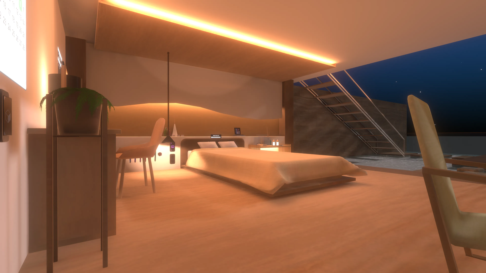
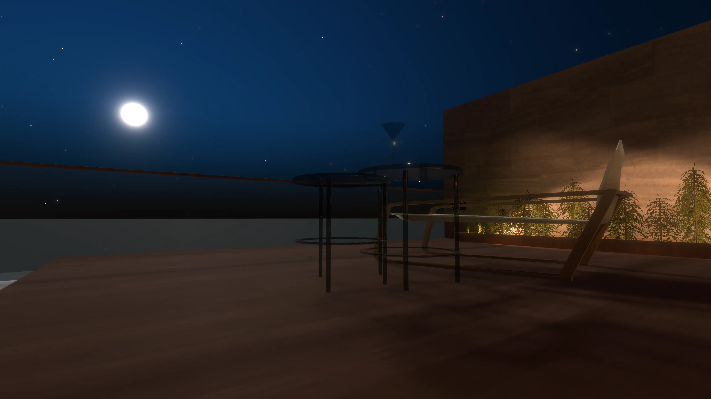
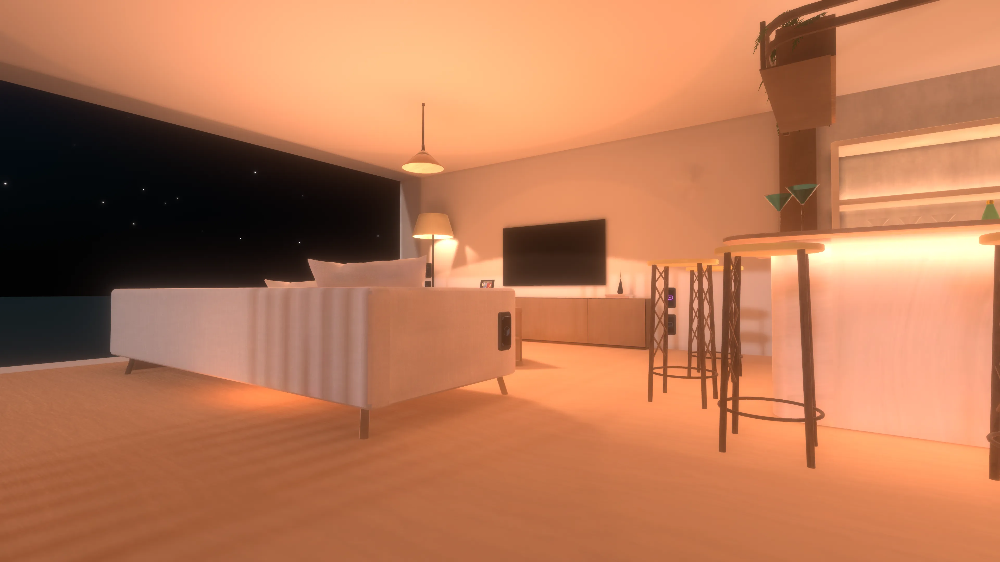

VRCHAT ACTIVITY
個人として続けている VRChat まわりの活動
🌐 ワールド制作
「0秒でV睡できるワールド」をはじめ複数のワールドを制作・公開中。「0秒でV睡できるワールド」は 7,000 Visits を達成しました。



🤖 Discord Bot
VoiceChannel Notification System — ボイスチャンネルへの参加・退出を通知する Discord Bot を開発・運用中。
📅 活動歴
2018 年 5 月に VRChat を開始し、2024 年 12 月に Trusted User に到達。そのほか、MMD 動画の制作（YouTube）や 2024 年の初音ミクファンメイドライブでの PA 担当、かつて BOOTH で公開していたアバター用ギミック・アセットの制作実績（現在は BOOTH での公開は終了しています）があります。